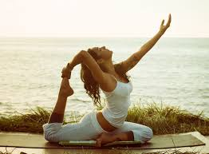
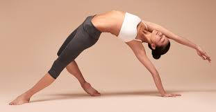
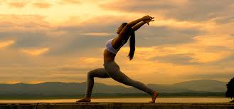
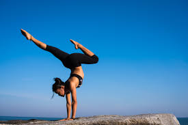
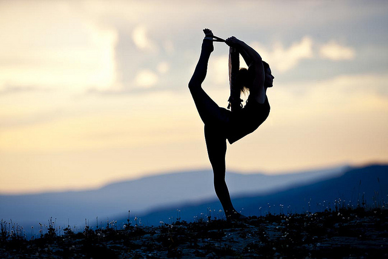

What is Yoga?
Most of us are accustomed to looking outside of ourselves for fulfillment. We are living in a world that conditions us to believe that outer attainments can give us what we want. Yet again and again our experiences show us that nothing external can completely fulfill the deep longing within for "something more." Most of the time, however, we find ourselves striving toward that which always seems to lie just beyond our reach. We are caught up in doing rather than being, in action rather than awareness. It is hard for us to picture a state of complete calmness and repose in which thoughts and feelings cease to dance in perpetual motion. Yet it is through such a state of quietude that we can touch a level of joy and understanding impossible to achieve otherwise.
Yoga is a simple process of reversing the ordinary outward flow of energy and consciousness so that the mind becomes a dynamic center of direct perception no longer dependent upon the fallible senses but capable of actually experiencing Truth.
By practicing the step-by-step methods of Yoga taking nothing for granted on emotional grounds or through blind faith we come to know our oneness with the Infinite Intelligence, Power, and Joy which gives life to all and which is the essence of our own Self.
Types of Yoga
- Hatha Yoga a system of physical postures, or asanas, whose higher purpose is to purify the body, giving one awareness and control over its internal states and rendering it fit for meditation.
- Karma Yoga selfless service to others as part of one's larger Self, without attachment to the results; and the performance of all actions with the consciousness of God as the Doer.
- Mantra Yoga centering the consciousness within through japa, or the repetition of certain universal root-word sounds representing a particular aspect of Spirit.
- Bhakti Yoga all-surrendering devotion through which one strives to see and love the divinity in every creature and in everything, thus maintaining an unceasing worship.
- Jnana (Gyana) Yoga the path of wisdom, which emphasizes the application of discriminative intelligence to achieve spiritual liberation.
- Raja Yoga the royal or highest path of Yoga, immortalized by Bhagavan Krishna in the Bhagavad Gita and formally systematized in the second century B.C. by the Indian sage Patanjali, which combines the essence of all the other paths.
-
Hatha Yoga
-
Karma Yoga
-
Mantra Yoga
.jpg)
-
Bhakti Yoga
-
Jnana YogaRaja Yoga